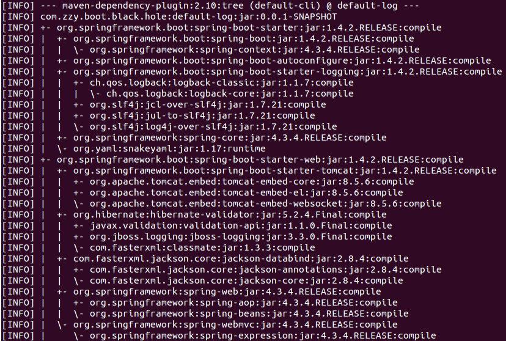

Spring Boot 日志概述
Spring Boot 采用 Commons Logging 作为内部的日志框架。对于日志的具体实现，则没有限制。默认的提供了对Java Util Logging，Log4J2 和 Logback 的支持。每种方式下，Console 的日志输出，作为默认的日志输出。
在默认情况下，采用Starters 来启动Spring Boot 项目，Logback 是默认的日志实现方案。当然，Logback 路由能够保证依赖的包使用的其他日志也可以很好的工作。
默认日志
引入Staters 后的日志依赖
Spring Boot 采用Starters 的方式引入对应的Jar 后，会对应的引入基础的项目依赖项，包括日志的依赖项。由于apache commons logging 是一个历史悠久的日志框架，Spring 项目在Core 中对其进行了依赖。
当采用org.springframework.boot:spring-boot-starter 和 org.springframework.boot:spring-boot-starter-web 构建一个基础的Spring Boot项目时，项目产生的Jar 依赖如下图所示：

由上图可以看出，Spring Boot 的基础spring-boot-starter 引入后，自动引入了SLF4J 提供的桥接功能org.slf4j:jcl-over-slf4j:jar 将JCL 的日志实现桥接到SLF4J 上，而SLF4J 直接采用了logback 日志实现框架。同时，也引入了对其JUL 和Log4j桥接。当引入spring-boot-starter-web 后加入了对org.jboss.logging:jboss-logging:jar 的依赖。关于SLF4J 的具体介绍参见寻根究底 LOGGING - SLF4J 日志FACADE 概述。
日志格式
默认的日志格式如下所示：
|
|
具体的含义如下：
- 精确到毫秒的日期和时间
- Log Level -
ERROR，WARN，INFO或者TRACE - 进程ID
---具体的日志内容的分隔符- 线程名字
- Logger Name - 通常是定义日志记录的类名
- 具体的日志内容
需要注意的是Logback 没有
FATAL的日志级别，它被映射到ERROR
控制台输出
默认的日志配置会将ERROR，WARN 和 INFO级别的日志输出到控制台。我们也可以使用”DEBUG” 模式才输出更多的内容。
也可以在Spring Boot的配置文件application.properties 中配置debug=true 来开启更多的日志输出功能。此模式只能输出被选择的核心logger 来输出更多的消息，例如内嵌的容器，Hibernate 和spring Boot。我们自己的应用并不会输出Debug 级别的日志。另外同上我们也可以配置trace 模式来输出更多的日志内容，但也只是一个被选择的核心Logger 列表。
Color-coded 输出
如果终端支持ANSI，将会输出彩色的日志。可以再application.properties 文件中设置spring.output.ansi.enabled 为always，detect 和never 来覆盖默认的级别，默认为detect。
彩色的样式采用%clr 来进行转换。最简单的模式就是日志将根据Level 输出为不同的颜色:
- FATAL : Red
- ERROR : Red
- WARN : Yellow
- INFO : Green
- DEBUG : Green
- TRACE : Green
除此之外，可以指定转换日志时的颜色，通过指定转换选项：
option 可以指定为：
- blue
- cyan
- faint
- green
- magenta
- red
- yellow
文件输出
默认情况下，Spring Boot 仅仅将日志输出在控制台。如果需要将日志输出到文件需要在application.properties 中配置logging.file 或者 logging.path。
- logging.file : 输出到指定的文件，可以为相对路径或者绝对路径
- logging.path : 与logging.file 是互斥的，指定文件的路径，默认的文件名为
spring.log
日志文件默认达到10Mb 时，将会从新打开一个文件输出，默认的日志输出级别为ERROR，WARN 和 INFO。需要注意的是日志系统的初始化要早于系统的生命周期，因此logging properties 不能够通过@PropertySource 注解获取。
Logging properties 相对于实际的日志框架是独立的，因此特定的日志的配置参数并不归Spring Boot 管理。
日志等级
所有支持的日志系统都可以通过logging.level.*=LEVEL 在application.properties 中配置：
|
|
默认条件下，Spring Boot 重新映射了Thymeleaf 的INFO 级别日志到DEBUG 级别。具体可以参见LevelRemappingAppender 类的细节。
自定义配置
配置概述
通过将不同的日志依赖包添加到classpath 中，Spring Boot 的日志系统能够判断激活不同的日志实现方式。更进一步的配置是将自定义的日志配置文件添加到classpath 中，或者通过Spring 的logging.config 来指定配置文件的位置。
可以通过设置org.springframework.boot.logging.LoggingSystem 系统变量来配置一个特殊的日志系统。对应的设置值应该是LoggingSystem 的实现类。也可以将该变量的值设置为none 来关闭Spring Boot 的日志。
由于日志的初始化早于ApplicationContext 的创建，因此不能够通过@Configuration 文件来进行配置。只能通过系统变量或者外部的传统配置文件来进行配置。
自定义配置文件加载
- Logback : logback-spring.xml, logback-spring.groovy, logback.xml 或者logback.groovy
- Log4j2 : log4j2-spring.xml 或者 log4j2.xml
- JDK(Java Util Logging) : logging.properties
需要注意的是官方推荐使用
-spring的配置方式。如果使用标准的配置方式，Spring 不能完全控制日志的初始化。此外，当采用executable jar方式时，Java Util Logging 会产生已知的错误，因此要避免使用。
系统变量
为了帮助实现自定义，以下的Spring Environment 变量会被转化为系统变量
logging.exception-conversion-word:LOG_EXCEPTION_CONVERSION_WORD: 日志异常时的转换语logging.file:LOG_FILE: 默认的日志文件路径和名称配置logging.path:LOG_PATH: 默认的日志路径配置logging.pattern.console:CONSOLE_LOG_PATTERN: 控制台日志的格式，只支持logbacklogging.pattern.file:FILE_LOG_PATTERN: 日志文件中日志的格式，只支持logbacklogging.pattern.level:LOG_LEVEL_PATTERN: 日志等级的格式渲染，只支持logbackPID:PID: 当前进程的ID
如果想要在日志属性中使用占位符，需要使用Spring Boot syntax 而不是对应日志框架的语法。例如Logback 的属性名之间的分隔符为:，而不是其自身默认的:-。
Logback 扩展
为了实现Spring 对logback 的扩展，我们需要将logback 的配置文件的名字定义为logback-spring.xml，或者采用logging.config 来指定配置文件的位置。
Spring Boot 可以采用<springProfile> 标签来激活不同的Spring Profile 配置。Profile 片段可以定义在<configuration> 元素的任何位置。可以使用name 属性来指明需要接受的profile 类型。可以用, 来指定多个profile。
Spring Boot 也可以采用<springProperty> 标签来获取在Spring Environment 中定义的属性。也就是说可以在logback 配置文件中获取在application.properties 中定义的变量。通常它也能直接工作在logbak 的<property> 标签中。具体配置如下：
此处采用的是RelaxedPropertyResolver 来获取Spring Environment 变量，因此在定义source的时候的变量采用虚线连接时，对应的变量可以松散的匹配。比如my-property-name 将会匹配myPropertyName 和MY_PROPERTY_NAME。
参考引用
本文章采用知识共享署名 2.5 中国大陆许可协议进行许可。
欢迎转载，但转载请注明来自张兆玉，并保持转载后文章内容的完整。本人保留所有版权相关权利。
本文链接：https://zhangzhaoyu.github.io/2016/11/16/spring-boot-logging-introduction/